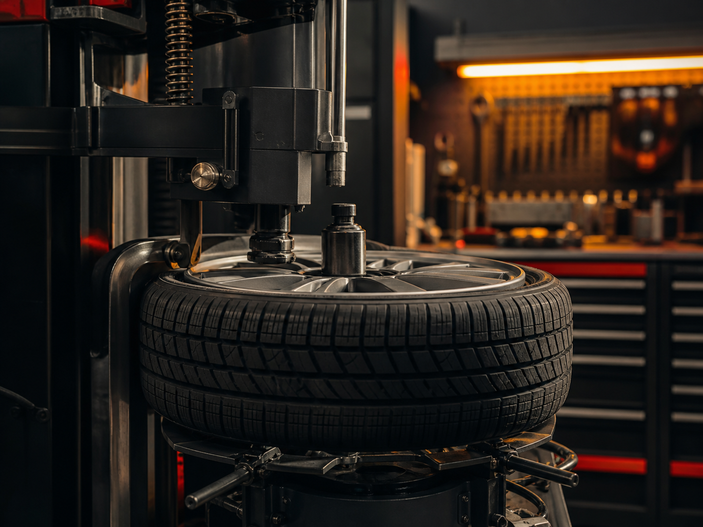
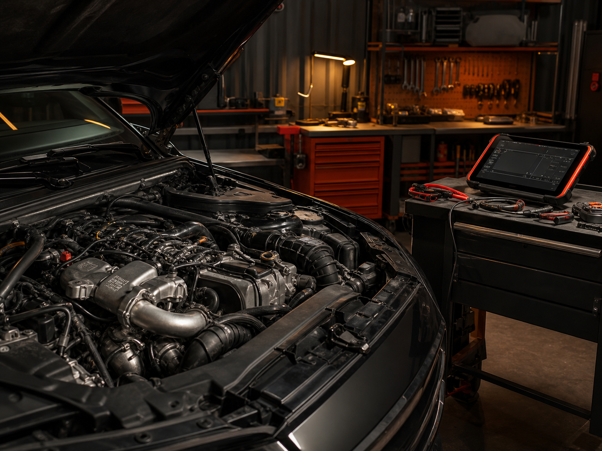

01
Шиномонтаж
Шиномонтаж по предварительной записи. Рекомендуем заранее позвонить и согласовать время, чтобы не приехать в неудобный момент.
Базовое обслуживание, шиномонтаж и ремонт двигателей. Перед приездом можно позвонить, уточнить услугу, время и ориентир по стоимости.
Чтобы не ждать и точно попасть к мастеру, лучше согласовать время визита по телефону.
Сайт ведёт к главному действию: описать задачу, согласовать время и не приехать зря.

Шиномонтаж по предварительной записи. Рекомендуем заранее позвонить и согласовать время, чтобы не приехать в неудобный момент.

Если есть проблемы с двигателем, лучше заранее описать симптомы: шум, нестабильная работа, потеря тяги, ошибки или другие признаки. После этого можно согласовать дальнейший осмотр.
Поможем с базовым обслуживанием легкового автомобиля. Перед визитом можно описать задачу по телефону — подскажем, можно ли записаться и что подготовить.
Если не уверены, какая услуга нужна, позвоните и кратко опишите ситуацию. Это поможет понять, стоит ли ехать в сервис и какое время лучше выбрать.
Возможность выездного шиномонтажа нужно уточнять по телефону: доступность зависит от времени, адреса и текущей загрузки.
Можно обратиться по легковым автомобилям разных марок: китайским, корейским, японским, отечественным, европейским и другим импортным авто.
Сервис находится по адресу: Железнодорожная аллея, 33А, микрорайон Первомайский. Звонок перед приездом помогает не тратить время на лишнюю дорогу.
Уточните, выполняется ли нужная работа в выбранное время.
Согласуйте слот, чтобы не ждать и не приехать в неудобный момент.
Опишите задачу заранее и обсудите предварительные детали.
Уточните ориентир на территории, чтобы проще найти сервис.
Можно согласовать визит не только днём, но и вечером.
Запись помогает не тратить время на ожидание и заранее понять, доступна ли нужная услуга.
Можно описать проблему по телефону и понять, с чего начать.
В карточке сервиса указана возможность оплаты картой.
Работа с китайскими, корейскими, японскими, отечественными, европейскими и импортными легковыми авто.
Адрес: Железнодорожная аллея, 33А, микрорайон Первомайский. Перед приездом лучше уточнить ориентир.
Точную стоимость ремонта корректно определять после уточнения задачи или осмотра автомобиля.
Укажите телефон, услугу и коротко опишите проблему.
По телефону можно обсудить симптомы, время визита и возможность выполнения услуги.
Адрес: Железнодорожная аллея, 33А, микрорайон Первомайский, Королёв.
Перед началом работ важно понять объём задачи и предварительно обсудить стоимость.
В карточке сервиса указаны рейтинг 4,2 и 26 оценок. Ниже — отзывы клиентов с Яндекс.Карт.
Смотреть карточку на Яндекс.Картах«Делает качественно и за приемлемую цену. Не первый раз обращаюсь с различными проблемами по авто, всегда выручает.»
«Дружные ребята, шиномонтаж профессиональный. Есть предварительная запись и консультации.»
«Быстро и качественно!»
«Хороший дешёвый шиномонтаж.»
«Качественно и вежливо.»
Если не уверены, подойдёт ли ваш автомобиль под нужную услугу, позвоните и уточните марку, модель и проблему.
Цена зависит от услуги, состояния автомобиля и объёма работ. Чтобы избежать недопонимания, лучше заранее описать проблему по телефону, а перед началом работ согласовать дальнейшие действия.
Да, лучше заранее позвонить или оставить заявку. Так можно уточнить время, услугу и не приехать в неудобный момент.
Сервис работает ежедневно с 10:00 до 22:00. Конкретное время визита лучше согласовать по телефону.
Да, в карточке сервиса указана услуга шиномонтажа. Перед приездом лучше уточнить доступное время.
В карточке сервиса указана возможность оплаты картой.
Адрес: Железнодорожная аллея, 33А, микрорайон Первомайский, Королёв. Чтобы проще найти место, рекомендуем заранее открыть маршрут на Яндекс.Картах или позвонить перед приездом.
По телефону можно уточнить ориентир по услуге. Точная стоимость зависит от задачи, состояния автомобиля и объёма работ.
В карточке указаны китайские, корейские, японские, отечественные, европейские, импортные и легковые автомобили.
В карточке указана такая возможность. Доступность выездного шиномонтажа лучше уточнять по телефону.
Перед приездом рекомендуем позвонить и согласовать время визита — так будет проще сориентироваться и убедиться, что нужная услуга доступна.
Чтобы проще найти сервис, откройте маршрут или позвоните перед приездом.
Оставьте заявку или позвоните — уточним услугу, удобное время и предварительные детали по стоимости.
Позвоните, чтобы уточнить время и услугу, или оставьте заявку.
Нажимая кнопку отправки, вы соглашаетесь на обработку персональных данных для связи по заявке. Данные используются только для уточнения обращения и не передаются третьим лицам.